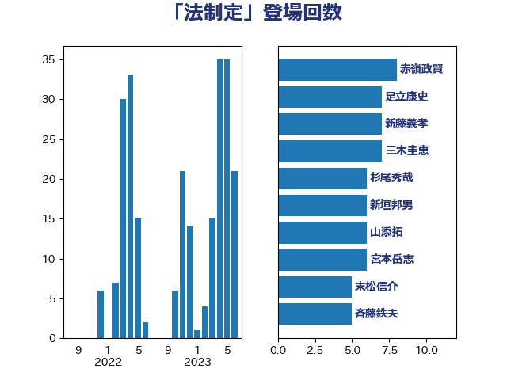

単語「法制定」

| 西村康稔 | 自由民主党 | 14 回 |
| 足立康史 | 日本維新の会 | 9 回 |
| 赤嶺政賢 | 日本共産党 | 7 回 |
| 宮本岳志 | 日本共産党 | 6 回 |
| 國重徹 | 公明党 | 5 回 |
| 奥野総一郎 | 立憲民主党 | 5 回 |
| 末松信介 | 自由民主党 | 5 回 |
| 浅田均 | 日本維新の会 | 5 回 |
| 船田元 | 自由民主党 | 5 回 |
| 北側一雄 | 公明党 | 3 回 |
| 岩渕友 | 日本共産党 | 3 回 |
| 新垣邦男 | 立憲民主党 | 3 回 |
| 茂木敏充 | 自由民主党 | 3 回 |
| 菅義偉 | 自由民主党 | 3 回 |
| 逢沢一郎 | 自由民主党 | 3 回 |
| 馬場伸幸 | 日本維新の会 | 3 回 |
| 上川陽子 | 自由民主党 | 2 回 |
| 倉林明子 | 日本共産党 | 2 回 |
| 吉川沙織 | 立憲民主党 | 2 回 |
| 吉田宣弘 | 公明党 | 2 回 |
| 吉田統彦 | 立憲民主党 | 2 回 |
| 大串博志 | 立憲民主党 | 2 回 |
| 大口善徳 | 公明党 | 2 回 |
| 宮崎政久 | 自由民主党 | 2 回 |
| 平木大作 | 公明党 | 2 回 |
| 斉藤鉄夫 | 公明党 | 2 回 |
| 新藤義孝 | 自由民主党 | 2 回 |
| 杉尾秀哉 | 立憲民主党 | 2 回 |
| 柚木道義 | 立憲民主党 | 2 回 |
| 柳ヶ瀬裕文 | 日本維新の会 | 2 回 |
| 磯崎仁彦 | 自由民主党 | 2 回 |
| 三谷英弘 | 自由民主党 | 1 回 |
| 下村博文 | 自由民主党 | 1 回 |
| 中谷元 | 自由民主党 | 1 回 |
| 井坂信彦 | 立憲民主党 | 1 回 |
| 伊佐進一 | 公明党 | 1 回 |
| 伊藤孝恵 | 国民民主党 | 1 回 |
| 伊藤孝江 | 公明党 | 1 回 |
| 前川清成 | 日本維新の会 | 1 回 |
| 吉田久美子 | 公明党 | 1 回 |
| 吉良よし子 | 日本共産党 | 1 回 |
| 坂本哲志 | 自由民主党 | 1 回 |
| 堤かなめ | 立憲民主党 | 1 回 |
| 塩川鉄也 | 日本共産党 | 1 回 |
| 宮本徹 | 日本共産党 | 1 回 |
| 小沼巧 | 立憲民主党 | 1 回 |
| 山口壯 | 自由民主党 | 1 回 |
| 山添拓 | 日本共産党 | 1 回 |
| 岡本三成 | 公明党 | 1 回 |
| 川田龍平 | 立憲民主党 | 1 回 |
| 平井卓也 | 自由民主党 | 1 回 |
| 打越さく良 | 立憲民主党 | 1 回 |
| 杉久武 | 公明党 | 1 回 |
| 武部新 | 自由民主党 | 1 回 |
| 熊野正士 | 公明党 | 1 回 |
| 牧島かれん | 自由民主党 | 1 回 |
| 玉木雄一郎 | 国民民主党 | 1 回 |
| 田名部匡代 | 立憲民主党 | 1 回 |
| 田村まみ | 国民民主党 | 1 回 |
| 田村憲久 | 自由民主党 | 1 回 |
| 石川大我 | 立憲民主党 | 1 回 |
| 石川香織 | 立憲民主党 | 1 回 |
| 礒崎哲史 | 国民民主党 | 1 回 |
| 神津たけし | 立憲民主党 | 1 回 |
| 福島みずほ | 社会民主党 | 1 回 |
| 福島伸享 | 無所属 | 1 回 |
| 稲田朋美 | 自由民主党 | 1 回 |
| 竹谷とし子 | 公明党 | 1 回 |
| 笠井亮 | 日本共産党 | 1 回 |
| 篠原豪 | 立憲民主党 | 1 回 |
| 舞立昇治 | 自由民主党 | 1 回 |
| 舩後靖彦 | れいわ新選組 | 1 回 |
| 萩生田光一 | 自由民主党 | 1 回 |
| 葉梨康弘 | 自由民主党 | 1 回 |
| 谷田川元 | 立憲民主党 | 1 回 |
| 輿水恵一 | 公明党 | 1 回 |
| 進藤金日子 | 自由民主党 | 1 回 |
| 野上浩太郎 | 自由民主党 | 1 回 |
| 金子恭之 | 自由民主党 | 1 回 |
| 階猛 | 立憲民主党 | 1 回 |
| 音喜多駿 | 日本維新の会 | 1 回 |
| 高良鉄美 | 無所属 | 1 回 |